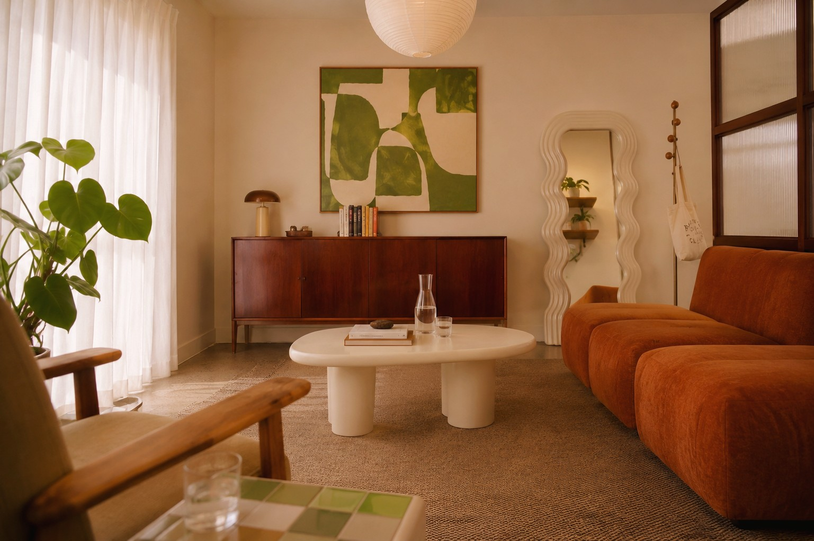

Serious clinical care that doesn’t ask you to leave yourself at the door.
Body Belonging is where neurodivergent people land after the diagnosis — anti-diet, affirming and culturally led, from a clinician who holds the credentials and knows the terrain from the inside.
Why I built Body Belonging.
I built Body Belonging because I’ve lived it from both sides of the chair. As a clinician who is also neurodivergent, I know first-hand how it feels when food, focus and the body don’t behave the way the textbook says, and how rare it is to find support that gets that from the inside. That lived knowing, paired with rigorous clinical training, is how I work: neurodivergent-led, and clinically grounded.
I’m a proud Yorta Yorta woman with strong connection to Bunurong Country, now living and working on Whadjuk Noongar Country, offering Body Belonging from this place with respect for Country, Elders and community.
I work with children, adolescents and adults across eating disorders, body image, identity, trauma and neurodivergence, drawing on CBT-E, ACT and trauma-informed, creative and play approaches — always centred on the person in the room, not just a diagnosis.
Deep training, and years in the room.
The warmth is real, and so is the clinical grounding. I’ve spent more than 15 years across eating disorder, mental health and community settings — hospitals, private practice, peer-led support and research — and I bring all of it into the room with the person in front of me.
- Accredited Mental Health Social Worker (AMHSW), AASW member, and Medicare Better Access provider
- ANZAED Credentialed Eating Disorder Clinician
- Clinically trained in CBT-E and ACT, with trauma-informed, neurodivergence-affirming and size-inclusive practice
- Trained in creative, art and play therapy approaches — for the work that doesn’t all happen in words
- Years of dedicated ADHD and neurodivergence-focused clinical work with adults across Australia
- Eating disorder clinician roles at the Royal Children’s Hospital Victoria and Monash Health
- Foundational work with Eating Disorders Victoria’s Peer Mentoring Program
- Clinical experience across queer and gender-affirming services, and perinatal and parent–infant mental health
- Gottman Method Couples Therapy training (Levels 1 & 2)
- Board member, ADHD WA
Care that holds culture, too.
Body Belonging is Aboriginal and LGBTQIA+ led, and grounded in social and emotional wellbeing, making room for culture, Country, kin, community, identity and self-determination alongside clinical care.
This is therapy with space for every part of you — body, brain, culture and story — and nothing you have to set aside to be here.
This commitment runs deeper than one clinic: Lauren is also the founder of MobMind Collective, a registered charity advocating for Aboriginal and Torres Strait Islander voices in the eating disorder space.
The room you’ll come to.
In-person sessions are held in a warm, considered room in Nedlands, on Whadjuk Noongar Country. Soft light, a good chair, and no need to perform — bring yourself exactly as you are.

Accredited, credentialed & in good company